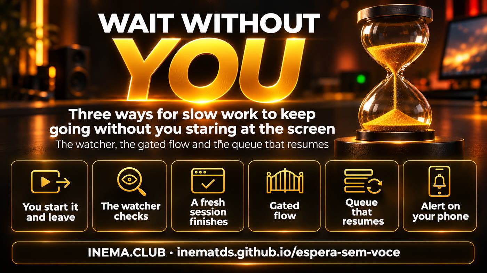
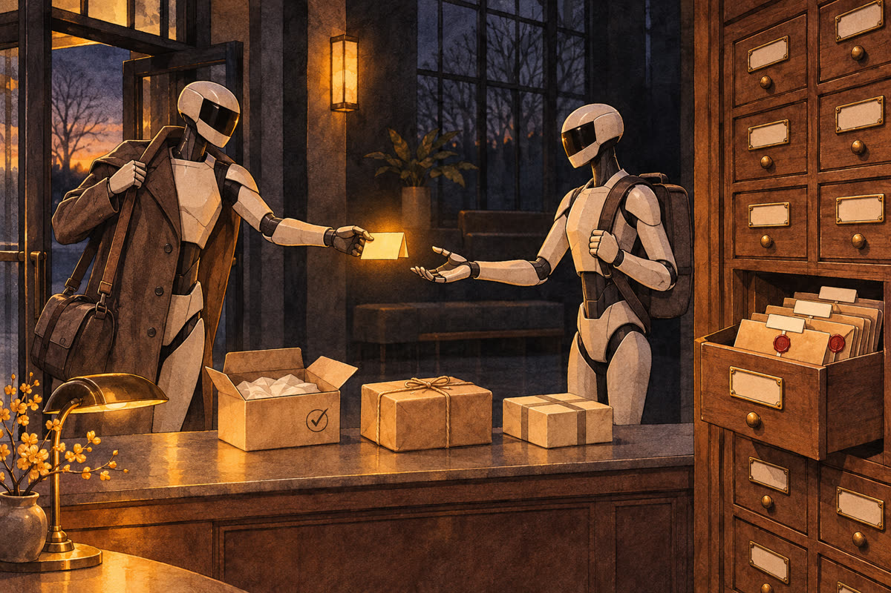

You make videos with AI
Send off the avatar or the edit and walk away. The video is assembled and published when it's ready, even in the middle of the night. If the generator gets stuck, you know right away, not the next day.
Uses: the watcher
Stop staring at the screen while your video gets ready. You ask the AI for the long job and close the conversation. Vigia, the watcher, is a program with no AI in it: it checks every 5 minutes and opens a new AI conversation to finish the work. At the end an alert reaches your phone: done or failed.

In one sentence
You want to ask the AI for a long job, go live your life, and get only the alert saying it's over. This free kit shows the three ways INEMA uses every day to wait with no one watching the screen, and includes one of them ready for you to use:
The computer it runs on stays on; the one who leaves is you.
Who it's for
Send off the avatar or the edit and walk away. The video is assembled and published when it's ready, even in the middle of the night. If the generator gets stuck, you know right away, not the next day.
Uses: the watcher

The work stops at the expensive points, before spending credits and before publishing, and waits for your "go ahead" on your phone. Nothing goes out without you seeing the text.
Uses: the flow with a gate

Three designs tested in production so you can pick the right one, the time limits of each one measured, and a ready-made watcher, with no dependencies, for you to adapt.
Uses: all three, and the queue day to day

How it works
You only work in step 1. Then you close the conversation and wait for the alert.
Agree on the job with the AI and approve whatever is needed, such as the video script.
Starts the slow part and writes the note: what has been done, what's left, your orders in quotes and what must not happen.
WhyA new conversation will finish the job, and it only knows what is in the note.
Close the conversation and go live your life. The computer stays on, without sleeping.
Every 5 minutes it asks "is it ready?". It waits up to 8 hours.
WhyThe watcher is an ordinary program, not an AI. While it waits, nothing is spent.
Do nothing. This is the part without you.
When the job is ready, the watcher opens a new conversation. It reads only the note and goes all the way to the end (assembles, reviews, publishes), with up to 3 hours to do it.
WhyWith no one at the screen, it doesn't stop to ask permission. What is written in the note is what counts.
Reads the result and sends the alert to your phone: green if it worked, red with the reason if it failed.
Read the alert. If it failed, the reason comes with it, and redoing it is your call.
WhyThe danger of leaving is silence. Here every ending comes with an alert.
The 3 ways
INEMA waits on long jobs in three ways, each good for a different case. The kit explains all three, with measured time limits, and delivers the watcher ready to use.
Way 1
For a job you started by talking with the AI.
A small separate program, with no AI, checks whether the job is ready and calls a new AI that reads the note and finishes. Your orders go in the note, before you leave.
Like in everyday life: you leave your car at the repair shop with a note ("change the oil, don't touch the radio") and go. The doorman looks from time to time to see if the part has arrived; when it does, he calls the mechanic, who reads the note and does the work. All you get is the message "car ready".
Comes from INEMA's internal watcher. The lean copy is in the vigia folder of this kit.
Way 2
For repeating production (video, reel) with approval midway.
You send a command on Telegram and the work moves through phases: script, avatar, download, assembly. At the expensive points there is a gate: the flow stops until your "go ahead". If the machine restarts, it picks up from the phase it was in.
Like in everyday life: a print shop that only prints after you approve the color proof. The piece moves from desk to desk; at the approval desk, it waits for your signature. If the power goes out, each desk knows what it has already done.
Comes from inemaccbot, INEMA's production bot (open source).
Way 3
For everyday requests that need to survive a restart.
Each request becomes a task saved in a queue: a restart doesn't erase it. If the machine goes down midway, an alert arrives, and you resume by sending in the chat the request number with "continue where you stopped" (the /job command): it carries on with the saved conversation.
Like in everyday life: the ticket number at the bank. You take a number and sit down; even if the system restarts, your number is still in line. If the service drops midway, the bank calls to tell you, and you come back with the same case number, without explaining everything again.
Comes from openpcbotv3, INEMA's Telegram assistant (open source). That's where the alerts from the other two arrive.
| Watcher | Flow with a gate | Queue that resumes | |
|---|---|---|---|
| Who waits | a small separate program, with no AI | the bot itself, phase by phase | the assistant itself, task by task |
| Do you approve midway? | no: your orders go in the note | yes, at the gate | no; you can resume later |
| When it gives up | 8 h without being ready | each phase has its own limit (1 h to 40 h) | if it drops midway: warns and waits for you |
| How it tells you | on your phone, done or failed | in the bot chat | in the assistant chat |
Key questions
Half of the jobs take more than 92 minutes, and you're not looking. The danger is silence: nothing arrives and you think it's still waiting. There are two cases, each with its own answer.

Each job has a limit (8 h, you can adjust it). Past that, the watcher gives up and sends the red alert with the reason. If the job writes a log and it stops moving for 20 minutes, with nothing else running in the folder, the alert comes before the limit.
Of the 179 jobs measured, 5 stopped at the limit, and the alert arrived for each one.
Here the watcher can't warn you, because it is the one that does the warning. That's why there is an inspection: another small program with no AI, with its own clock. Every hour it checks whether the watcher ran in the last 15 minutes, whether any job passed its limit without an alert and whether any new AI died without closing out. It only speaks up if it finds a problem.
Every day at 08:00 a short report arrives. If it doesn't, the machine went down: a missing report is also a warning.
Like in everyday life: the doorman calls when a package's deadline runs out. But if the doorman falls asleep, no one calls. So the building manager walks by every hour with a flashlight, and in the morning leaves a note summing up the night.
You close the conversation and the AI forgets everything. Without a handover file, it might redo what was already finished or forget what you asked for. That's why, before you leave, it writes the note.

It stays in the job's folder. The reader is a new AI that knows nothing beyond it. It has four parts:
For when you come back to the conversation yourself another day, or switch AIs (Claude ↔ Codex).
How to ask: before clearing, tell the AI "handoff" (session handoff). When you're back, in a new conversation, say "resume".
Before installing
Try it
Open Claude Code or Codex in your project folder. They are AIs that work with files and run programs on your computer, always asking permission.
Paste the request. The AI reads the kit, asks which of your jobs take long and says which of the three ways suits each one.
Say yes only to what makes sense. Then start a real job, close the conversation and wait for the alert.
Read the repository https://github.com/inematds/espera-sem-voce (the README and the vigia folder). Then look at my project and ask me which jobs take long (video, render, transcription, external generator) and how I wait for them today. Tell me, in plain language, which of the three ways suits each one (watcher, flow with a gate or queue that resumes), how much time I would stop keeping the conversation open and what the watcher would need to know how to ask "is it ready?". Don't install or change anything before I say yes. Once I say yes: copy the example watcher, run its test, set up the first note and the first check for one of my jobs, connect the alert to my phone through Telegram and tell me whether this computer can sleep or shut down while it waits.
The animated flows above are the whole explanation: watch each one to the end. There is no online version to use, because the watcher runs on your computer.
There is no installer: it's a folder with a small program (in Python, which your AI installs if it's missing). Download the kit ZIP or see the repository.
How the watcher runs, the test, the exact time limits and where each piece lives in the source projects are in the README.
Measured
The inspection, switched on on Nov 25, 2026, counted in its first report 286 watcher runs in 24 hours, with a longest gap of 6 minutes and no job lost. The assistant's queue completed close to 150 thousand tasks; 13 failed, and each failure produced an alert. Counts taken from each system's database on Nov 25, 2026.
FAQ
No. You paste the request and your AI sets up the watcher for your jobs. You just say yes.
The kit is free and open. Waiting spends nothing. The final part uses your AI (the Claude or Codex subscription), like any other work it does.
Yes. The machine the watcher runs on stays on and doesn't sleep; what you close is the conversation.
A job you start by talking with the AI: the watcher. Repeating production with approval: the flow with a gate. Everyday request: the queue. The request above has the AI choose with you.
Yes. The watcher calls whatever command you choose for the final part; the example uses Claude Code, and you can swap it for Codex.
Come tell us and see other free kits at inema.club, right on the web.